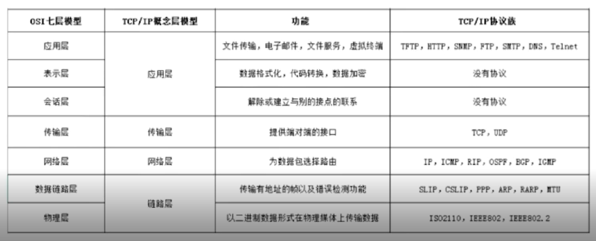
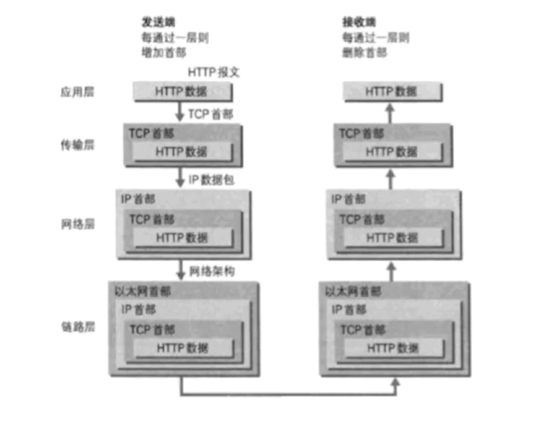

面试专题
网络
OSI七层协议
OSI 并不是一个标准，只是一个概念新框架

物理层
- 传输比特流
- 定义了物理设备的标准(网线类型，光纤接口等)
- 单位比特
- 网卡也在这一层工作
数据链路层
- 定义了如何格式化数据进行传输，控制物理介质的访问
- 错误检测，纠正
- 将比特数据组成帧，交换机在这层，对帧解码并发送到正确的接收方
网络层
- 把网络地址翻译为物理地址
- 决定数据如何从发送方路由到接收方
- 路由器属于网络层
- 数据包
- 协议: IP
传输层
- 解决主机间的数据传输
- OSI中最主要的一层
- 传输协议同时进行流量控制
- 将数据包强行分割(分割成数据片并给予序列号)
- TCP协议和UDP协议
会话层
- 自动收发，自动寻址
- 建立和管理应用程序之间的通信
- 解决不同系统之间的通信语法的问题
表示层
- 网络协议，需要固定长度，组成的消息头
- 更方便接收方了解接收的包
应用层
- 更方便的应用接收到的数据
- HTTP协议
先自上(应用层)而下添加数据头，后自下而上处理数据头部
OSI的标准:TCP/IP

先自上(应用层)而下添加数据头，后自下而上处理数据头部

TCP三次握手
类加载机制和双亲委派模型
类的生命周期
类加载包括 加载 验证 准备 解析 初始化五个阶段
- 加载: 类加载器(可自己设置)，热部署，加密解密
- 验证: 字节流包含的信息符不符合虚拟机要求，会不会危害虚拟机
- 准备: 为类变量分配内存，设置初始值。
- 解析: 将常量池的一些引用替换为实际值。
- 初始化: 赋值
- 使用: 构造过程，构造方法
| 类加载器名称 | 加载范围 |
|---|---|
| 启动类加载器 Bootstrap ClassLoader | 存放在 |
| 扩展类加载器 Extension ClassLoader | 存放在 |
| 应用程序加载器 Application ClassLoader | 加载用户类路径上指定的类库，开发者可以直接使用，一般情况下这个就是程序中默认的类加载器 |
如何组织类加载器？
虚拟器引入了双亲委派模型
当一个加载器进行类加载的时候，先委派给双亲加载器加载。双亲无法加载的时候再返回自己加载。
好处: 保证类有合适的优先级的层次关系，保证程序稳定运行。
七个事务传播属性
什么是事务传播属性
传播两个方法: 两个方法都带事务，但是事务设置不同。
为什么要事务？
事务是为解决数据安全操作提出的，事务控制实际上就是控制数据的安全访问。
| 传播行为 | 含义 |
|---|---|
| propagation_required（xml文件中为required) | 表示当前方法必须在一个具有事务的上下文中运行，如有客户端有事务在进行，那么被调用端将在该事务中运行，否则的话重新开启一个事务。（如果被调用端发生异常，那么调用端和被调用端事务都将回滚） |
| propagation_supports(xml文件中为supports) | 表示当前方法不必需要具有一个事务上下文，但是如果有一个事务的话，它也可以在这个事务中运行 |
| propagation_mandatory(xml文件中为mandatory) | 表示当前方法必须在一个事务中运行，如果没有事务，将抛出异常 |
| propagation_nested(xml文件中为nested) | 表示如果当前方法正有一个事务在运行中，则该方法应该运行在一个嵌套事务中，被嵌套的事务可以独立于被封装的事务中进行提交或者回滚。如果封装事务存在，并且外层事务抛出异常回滚，那么内层事务必须回滚，反之，内层事务并不影响外层事务。如果封装事务不存在，则同propagation_required的一样 |
| propagation_never（xml文件中为never) | 表示当方法务不应该在一个事务中运行，如果存在一个事务，则抛出异常 |
| propagation_requires_new(xml文件中为requires_new) | 表示当前方法必须运行在它自己的事务中。一个新的事务将启动，而且如果有一个现有的事务在运行的话，则这个方法将在运行期被挂起，直到新的事务提交或者回滚才恢复执行。 |
| propagation_not_supported（xml文件中为not_supported) | 表示该方法不应该在一个事务中运行。如果有一个事务正在运行，他将在运行期被挂起，直到这个事务提交或者回滚才恢复执行 |
Spring中的事务隔离级别
| 隔离级别 | 含义 |
|---|---|
| isolation_default | 使用数据库默认的事务隔离级别 |
| isolation_read_uncommitted | 允许读取尚未提交的修改，可能导致脏读、幻读和不可重复读 |
| isolation_read_committed | 允许从已经提交的事务读取，可防止脏读、但幻读，不可重复读仍然有可能发生 |
| isolation_repeatable_read | 对相同字段的多次读取的结果是一致的，除非数据被当前事务自生修改。可防止脏读和不可重复读，但幻读仍有可能发生 |
| isolation_serializable | 完全服从acid隔离原则，确保不发生脏读、不可重复读、和幻读，但执行效率最低。 |
除了default另外四个与JDBC的隔离级别相对应。
- 数据库ACID原则
- A:原子性,Atomicity
- C:一致性,Consistency
- I:隔离性,Isolation
- D:持久性,Durability
在mysql中的innodb引擎,原子性,一致性,隔离性通过redo和undo实现,redo 就是ib_logfile物理文件,而undo默认在共享表空间ibdata里面,通过设置参数可以独立出来.
脏读、不可重复读、幻象读概念说明
- 脏读：指当一个事务正字访问数据，并且对数据进行了修改，而这种数据还没有提交到数据库中，这时，另外一个事务也访问这个数据，然后使用了这个数据。因为这个数据还没有提交那么另外一个事务读取到的这个数据我们称之为脏数据。依据脏数据所做的操作肯能是不正确的。
- 不可重复读：指在一个事务内，多次读同一数据。在这个事务还没有执行结束，另外一个事务也访问该同一数据，那么在第一个事务中的两次读取数据之间，由于第二个事务的修改第一个事务两次读到的数据可能是不一样的，这样就发生了在一个事物内两次连续读到的数据是不一样的，这种情况被称为是不可重复读。
- 幻象读：一个事务先后读取一个范围的记录，但两次读取的纪录数不同，我们称之为幻象读（两次执行同一条 select 语句会出现不同的结果，第二次读会增加一数据行，并没有说这两次执行是在同一个事务中）
数据库操作事务隔离
读取未提交的事务里面的数据(脏读)
设置隔离级别方法
1 | set session transaction isolation level read uncommitted; |
开始事务
1 | set session transaction isolation level read uncommitted; |
另外开一个session 进行查询，可看到并不还没有更改数据。
1 | set session transaction isolation level read uncommitted; |
begain中执行的操作 被第二个进程读到了，导致脏读，一但事务回滚，第二个进程保存的是之前的结果。
读已提交(不可重复读)
read committed
可重复读
repeatable read
可串行化
serialiable
锁表效率低
高并发如何修改同一行数据
jvm解决
- jvm 下用synchronized锁。
- lock 锁
try lock finally unlock
JVM 解决不了分布式环境多任务对共享资源竞争的协同操作问题
分布式解决
分布式锁 三种实现方式
数据库 (性能差)
redis (死锁)
zookeeper
- 基于异常 (临时节点)
- 基于相互监听 (性能比较高，占用资源，临时有序节点)
Zookeerper 数据结构
- Zookeeper 数据结构类似Linux
- 每一个节点都有值
原文作者: edxuanlen
原文链接: https://edxuanlen.tk/2020/03/13/面试专题/
版权声明: 转载请注明出处(必须保留作者署名及链接)